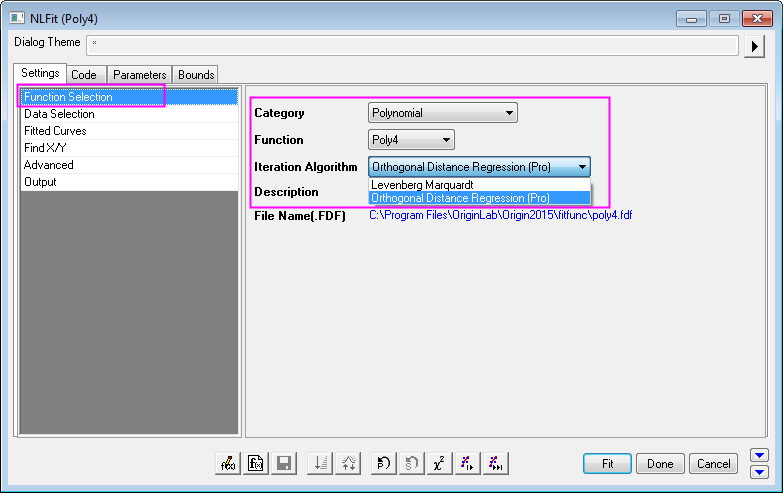
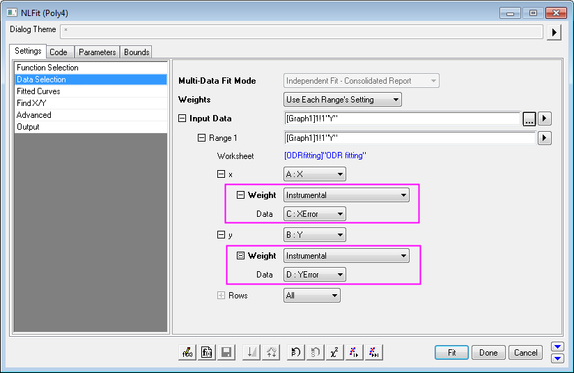
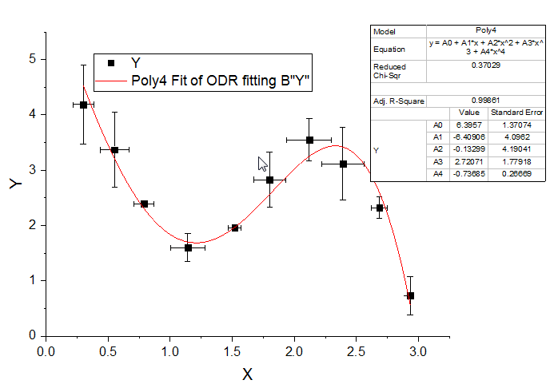

Nichtlineare Anpassung mit Hilfe der orthogonalen Distanzregression
Nonlinear-fitting-using-orthogonal-regression
Zusammenfassung
Beim Durchführen einer nichtlinearen Kurvenanpassung auf die Versuchsdaten ergibt sich möglicherweise die Notwendigkeit, Fehler sowohl in den unabhängigen als auch in den abhängigen Variablen zu berücksichtigen. In Origin können Sie die orthogonale Distanzregression (ODR) verwenden, um Ihre Daten mit impliziten bzw. expliziten Funktionen anzupassen. Dieses Tutorial soll zeigen, wie eine nichtlineare Kurvenanpassung auf Daten, die X- und Y-Fehler enthalten, mit Hilfe der ODR und einer Standardfunktion durchgeführt wird.
Origin-Version mind. erforderlich: Origin 9.1
Was Sie lernen werden
Dieses Tutorial zeigt Ihnen, wie Sie die orthogonale Distanzregression verwenden, um nichtlineare Daten mit sowohl X- als auch Y-Fehlern anzupassen.
Beispiel und Schritte
- Öffnen Sie eine neue Arbeitsmappe. Wählen Sie Hilfe: Ordner öffnen: Sample-Ordner ... im Menü, um den Ordner "Samples" zu öffnen. Öffnen Sie in diesem Ordner den Unterordner Curve Fitting. Dort befindet sich die Datei ODR fitting.dat. Ziehen Sie diese Datei per Drag&Drop in das leere Arbeitsblatt, um sie zu importieren.
- Markieren Sie die Spalte XError (Langname) und klicken Sie mit der rechten Maustaste, um im Kontextmenü Setzen als: X-Fehlerbalken auszuwählen und die Spalte damit als Spalte des X-Fehlers festzulegen.
- Markieren Sie die Spalte YError (Langname) und klicken Sie mit der rechten Maustaste, um im Kontextmenü Setzen als: Y-Fehlerbalken auszuwählen und die Spalte damit als Spalte des Y-Fehlers festzulegen.
- Markieren Sie alle vier Spalten und wählen Sie Zeichnen: Einfache 2D: Punktdiagramm, um ein Punktdiagramm mit X- und Y-Fehlerbalken zu erstellen.
- Wählen Sie Analyse: Anpassen: Nichtlinearer Fit: Dialog öffnen..., um den Dialog NLFit zu öffnen.
- Wählen Sie auf der Seite Funktionsauswahl in der Auswahlliste Kategorie die Option Polynomial, für Funktion die Option Poly4 und den Iterationsalgorithmus Orthogonale Distanzregression (Pro).

- Da die Spalten für X-Fehler und Y-Fehler in Schritt 3 und 4 festgelegt wurden, werden diese beiden Spalten automatisch jeweils als entsprechende Gewichtung für X- und Y-Daten zugewiesen, wenn die Orthogonale Distanzregression als Iterationsalgorithmus ausgewählt wird. Sie können zur Seite Datenauswahl gehen und die KnotenX und Y unter Eingabedaten erweitern, um dies zu sehen. 
- Klicken Sie auf die Schaltfläche Fit und wählen Sie Nein im angezeigte Dialog Erinnerung. Die Anpassungsergebnisse werden unten gezeigt: 
Sie können auf dieser Seite Einzelheiten zum Algorithmus der ODR sowie zum Algorithmus Levenberg-Marquardt (L-M) nachlesen. Ein weiteres Beispiel zur Verwendung der orthogonalen Distanzregression für implizite Funktionen finden Sie hier.